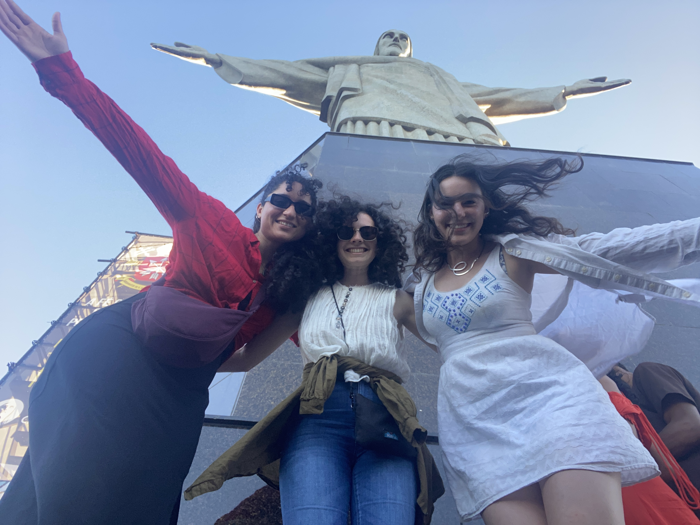
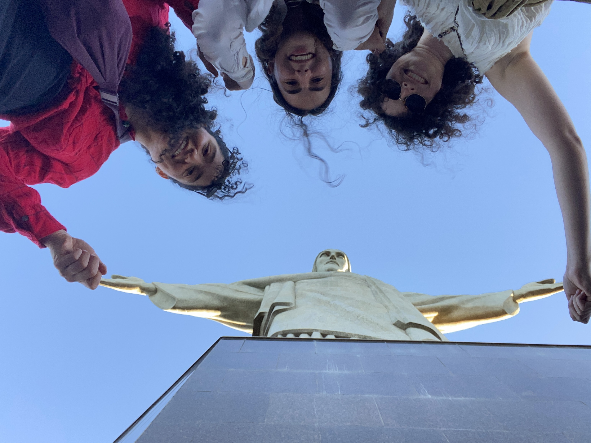

Hello hello it's Emily checking in for a blog post!
We were SO excited to welcome Karish to Rio bright and early today. I had been waiting patiently to tell Lena and Karishma the big news about my engagement to Yonny until all three of us were together in person.
This time felt even more real than telling other friends, maybe because the (exciting) reality is setting in more and more each day or maybe because my friendship with them predates my relationship with Yonny.
We were all very excited and Lena was shocked that I had been able to keep the news in for three whole days of nonstop conversation. It was really hard but she noticed details in hindsight such as my spontaneously bringing up who would be at my wedding.
We had big plans to visit a Rio neighborhood but out of the blue one of João's friends, Victor, texted Emily about a Sunday market that we just couldn't miss. It ended up working out because it was a long walk away through the Urca neighborhood and we had a lot of catching up to do.
Fresh coconut water was on my Rio food bucket list so Karishma and I got two hefty coconuts at a stunning beach with mountains on either side.
It was quite hard to finish this unit. There was like a gallon of water in there.
We walked and gabbed along the beach, getting a little taste of Cristo Redentor who we would be visiting later in the day.
We fell in love with the Urca neighborhood and this little market. I got a beautiful necklace which will make an appearance in all the following images!
Featuring live music!
Another food bucket list item was bolinhos de bacalao (cod croquets) which were amazing! We got one each then went back and got another each which they had just pulled from the frier!
We ate them with some spicy red sauce and lime juice.
From Urca we went up to the Corcovado Train at the base of Christ the Redeemer. This was the one activity that Karishma requested we wait for her to do and we were happy to do it all together!
The train up the mountain was about 20 minutes and very steep. At the top, we disembarked behind the statue giving us a great view of His Holy Butt. I was very excited to take a photo with the butt which both Lena and Karishma were forced to help out with.
The bus of modesty came by just in time to save me.
Another attempt.
Lena and Karishma were being much more classy.
From way up there we got beautiful sweeping views of Rio.
I had noticed that the Rio neighborhoods were very divided, which I assumed was due to socioeconomic factors. That is definitely part of it but another part is that neighborhoods are physically separated by giant mountains with sheer cliff faces.
I've never seen such a big city built around such prominent mountains! It's stunnning but a little unfortunate that you can't just walk between different neighborhoods.
We then spent awhile trying to recreate other tourists' stylish photos with Christ, but without much success.


We are definitely holding his hands.
We had an amazing day which doesn't always make an amazing blog. We mostly spent the time catching up on each others' lives-- it's easy to fall behind with two PhDs and med school!
We also have lots and lots of mutual friends that we love to catch up on! So not much to tell y'all here but we had an amazing day.
We ended the day with an amazing and fancy dinner that Lena and Karishma treated me to to celebrate the engagement!
When we got back to the hotel, Lena called her parents, Debby and Jacob (her partner and good friend of mine and Karishma's) so that I could break the news which was very exciting for me!
We caught Jacob at Sunday dinner with a bunch of friends from Lena & Jacob's time in NYC so I got to tell the whole room and hear a chorus of 10 people going "wooo" simulatneously come through the phone.
I did want Yonny to propose but I was jealous that it meant he would get to break the news to our parents and siblings and get their initial reactions. So I've been really enjoying getting to tell people about the engagement!
Distance walked today: 7 miles
Portuguese words of the day:
cheque = check
cogumelo = mushrooms
cartão de crédito = credit card
Eu sinto muito = I'm sorry
Até logo,
Emily "(about Christ) Guys his pitts are stained! Just like mine!"
Lena "Am I the Reddit?" Armstrong
Karishma "evil paparazzi" Lachhwani